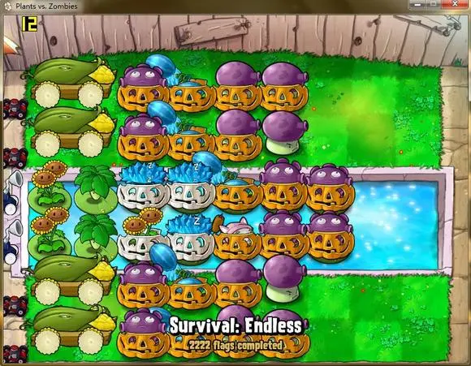
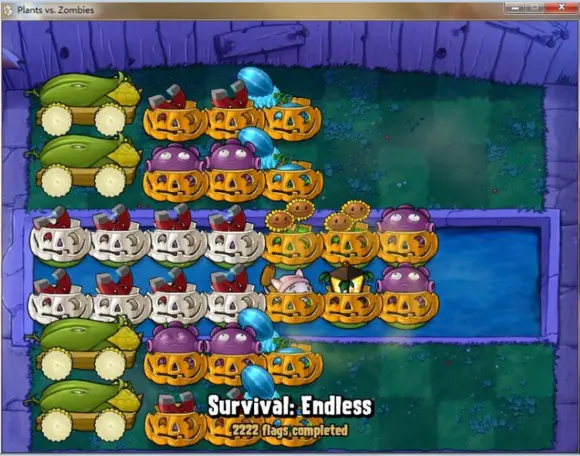
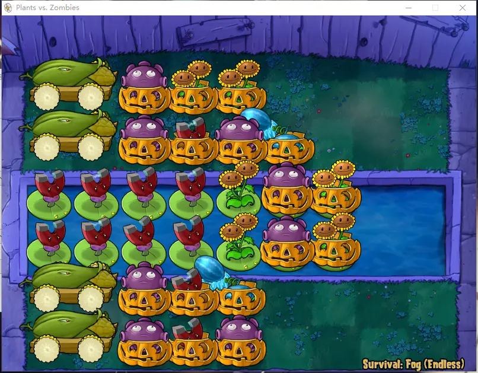
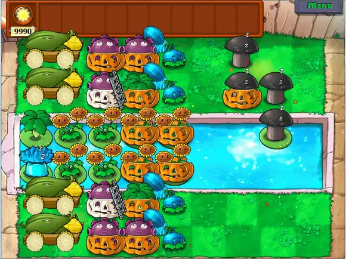
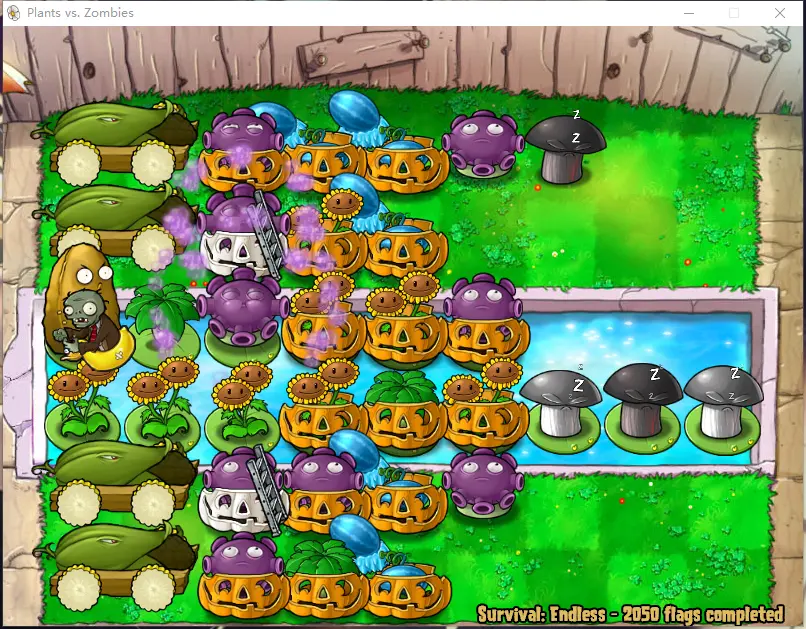
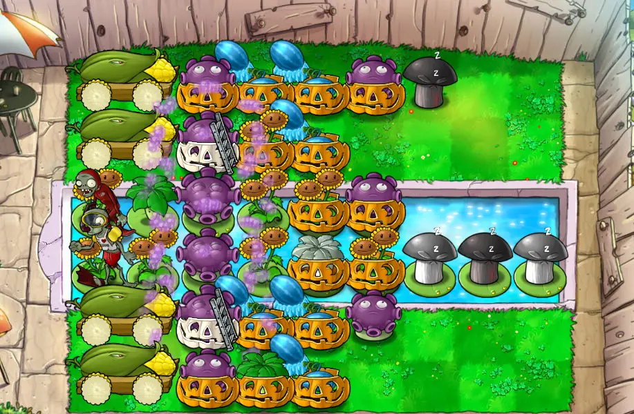

底线四炮
作者：子车的得E门生（🔗bilibili）
收录日期：2022-08-26
现代底线四炮以czmppppp的原则“优先处理矿工”为嚆矢。滥觞于冰骨架与超多炮的双冰变奏正失去它们的借鉴意义。但面对看似无垠的解阵空间，我想循一路暴狂“核代P6”的阵解好过对运算量名为振翮的挥霍。
我们怀揣热忱的灵魂天然被赋予对超越性的追求，不屑于古旧坐标的约束，钟情于在别处的芬芳。“底线四炮的发展史就是一个不断NTR的过程。”某路之言可谓切中了肯綮。在孜孜矻矻以求完美阵型的道路上，对阵型的改进本就是在相互借鉴与辩证否定中塑型的动态过程。而我们的底料便是对不同带卡方式、不同运阵节奏的觉感与体认。在尼采的观念中，如果在成为狮子与孩子之前，略去了像骆驼一样背负前人遗产的过程，那其“连续可导”洵不能成立。
他清晰地记得，六岁那年夏天的那个傍晚，当他把一条巴掌大的阵图

czmppppp的第一代
捧到5p面前时，5p眼里第一次出现了一种陌生的光。他甚至觉得，他在5p眼里一定是突然有了地位的，这种感觉在随后下地吹水回来的马甲和两位水军眼里也得到了证实。
准确地说，在那之前他没解过阵，左右脑间也回荡不起惊天动地的轨道。他相信两个吧主应该也极少解过这东西。在5p的招呼下，他手忙脚乱地套用了初露端倪却象征一个伟大时代开端的双冰变奏。少炮，是跟非定态联系在一起的东西了。天！为了那个阵，5p要用4炮一核炸矿工然后还要依靠IO的自然激活。隐隐约约地，他有了双核的概念，还有慢慢浓起来的期待。
第339个ID_坐在电脑前一边看着炮弹炸着空气，一边简单地埋怨了几句，似乎是嫌5p把炮用的太浪费了，没了减压作用。这已经是难得的意外了，平日里，第339个ID_一个礼拜可能也就说这么一句话。第339个ID_埋怨时，5p正在把那条图放进贴里，她轻手轻脚，准备骗一个精品顺便经验+3。第339个ID_笑了笑，带着点儿嘲意。5p嗔怪着说，你笑什么笑！你有更好的解法？还在娘胎里游呢。第339个ID_保持着笑意，拿出了磁铁。

第339个ID_的第二代

渐强的第2.71828代
最后，第339个ID_说了一句有点儿没头没脑的话，第339个ID_说，该上双核了。
毫无疑问，从核代奏与核透支一觇的双冰单核有偏狭过时的成分。倘若我们在对过往借冰变奏之言“祓魅”后，又对不断膨胀的连续冰波进行“赋魅”，那么在丢失严谨性的同时，未尝也不是丢了大量连续加速波的逐波节奏的言荃。相比于冰变奏的繁复绵密，双核堪称是最为直接暴力的带卡方法。最简单地，双核八炮P6便是无法循环的逐波打法。第五、六波双核连用，使得炮刚好能够恢复cd。当然，如果炮数更少，或者所需的运算量更多，则大概率涉及核武的透支和弹坑流转。
来不及细细思考了，双核一下锅，屏幕里顿时鲜香扑鼻。他是第一次知道，核的威力原来是这样的，新鲜的让人稍稍发晕。在运阵从-600到5998之间，他拼命地瞪大眼睛，贪婪地在场地上里寻找合适的弹坑。他相信炸的越多，阵型的稳定性就越强。

一路暴狂的第三代
至于那阵轨道具体是什么节奏，他倒完全不记得哪怕一点儿细节。因为运阵丢核弹的状态都有些鲁莽，只有好了就用和哪里亮了点哪里的方法论，一波接一波时炮弹与咖啡豆碰撞的嘀嘀声（按键精灵的声音），还有一坑与另一坑之间护核时隐约的急促。

还是某路的第四代
蓝图中的玉墀终归只是温蠖中的蜃楼，在无尽场域的分野也未必明晰。譬如当我们追寻动态平衡时，在途中涉足收尾不存在的万应锭，这究竟是伴随着期望的泯灭还是期望的达成？在我们透支核弹的同时，CD也在无形中羁绊着我们。
头天晚上刚意识到这个问题的时候，我的内心几乎是崩溃的。不过无论如何我打算试验一下，毕竟和高中生不同，宝开的程序员都有懒惰这一原罪。事实也确实如此，颇出意外地，居然上2F的僵尸能够在本2F影响收尾结算，从而使得僵尸不刷新。于是这个问题就这样不为人知地解决了，尽管它要比核代P6来得惊险，然而无论是最初那毁灭性的伪和平，还是最后绝处逢生的养僵尸，没有实际研究过那个阵型，怕是无法想象到我当时所感受到的冲击吧。用养僵尸的收尾方式升华核代P6的超越性，保持婞直却又不拘泥于所谓“遗世独立”的单向度形象。这便是ND在被语c外的所谓之的深的意义，亦如造阵解阵的理想期望范式。发明新命题——套用新节奏——升上天空。

子车的第4.6692代

不知道是不是最后之作的第五代
坐在电脑前码字发帖时，已经是最后一件事了。把阵型解完，准备录个视频复刻的时候，他就抓着了一个黏黏软软的东西，凑到电脑前的LED里一看，是751>746！从后场飞到底线，它显然已经超越了极限。现在，它早已死了，只是眼里还闪着一丝诡异的光……

？